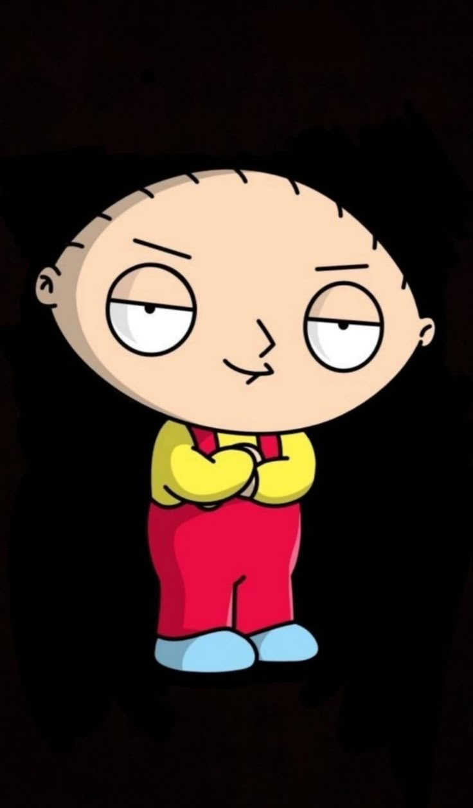

Mohammed Zoheir Abbes, based in Marseille, France. You are currently doing a DWWM web and mobile development training program at GRETA/CFA Marseille, where you are learning HTML, CSS, JavaScript, PHP, SQL, MySQL, phpMyAdmin, XAMPP, Git, and GitHub. You are also a physicist and mathematician, with a strong interest in logic, problem-solving, technical thinking, and understanding how things work deeply — not just copying code. You like learning by doing, with clear beginner-friendly explanations, practical examples, and full corrected code. You often ask questions when something looks confusing, especially when PHP, SQL, and HTML are mixed together in the same file. You are building projects like VoyagePlus / GoTravel, a travel website with login, registration, reservations, flights, passengers, contact forms, PHP sessions, SQL databases, and price calculations. You are also interested in AI image generation, especially creating exaggerated caricatures for TikTok-style viral content. You want to build a Remini-style caricature app or web app where users upload a face photo and receive a stylized AI caricature. You are also passionate about gaming, PCs, consoles, and tech, including graphics cards, PS5, monitors, 4K/1440p gaming, racing wheels, and performance upgrades. Your learning style is very practical: you prefer someone to show you where to put the code, what file to create, how to test it, and why each line exists. You like simple explanations, visual examples, and direct answers. Personality-wise, you are curious, funny, ambitious, and sometimes impatient when things do not work — but you keep trying. You want to build real things, understand them properly, and become independent in web development, AI tools, and technology.
Professional training in web and mobile development: HTML, CSS, JavaScript, PHP, SQL, MySQL, Git/GitHub, and full-stack projects.
Academic background in physics and mathematics, focused on scientific reasoning, logic, analysis, and problem-solving.
Academic achievement in scientific studies, with strong foundations in mathematics, physics, logic, and problem-solving.
Professional training in web and mobile development, including HTML, CSS, JavaScript, PHP, SQL, MySQL, Git, and GitHub.
Built a travel website project with pages, forms, login/register system, reservations, database tables, and PHP/MySQL integration.
Created and explored AI-generated caricature content for TikTok-style videos and started planning an AI caricature web app.
Started using Git and GitHub to manage code, projects, commits, and repositories.